Moja hermetická náuka od Frantíška Bardona
- Poznámky sú vytvorené v programe LOGSEQ -> bezplatná aplikácia s otvoreným zdrojom na vytváranie poznámok, správu úloh, vytváranie diagramu znalostí a ďalšie
Ako nainštalovať program LOGSEQ a otvoriť v ňom poznámky
- Stiahni si inštalačku programu LOGSEQ zo stránky klik link na oficiálnu stránku programu LOGSEQ
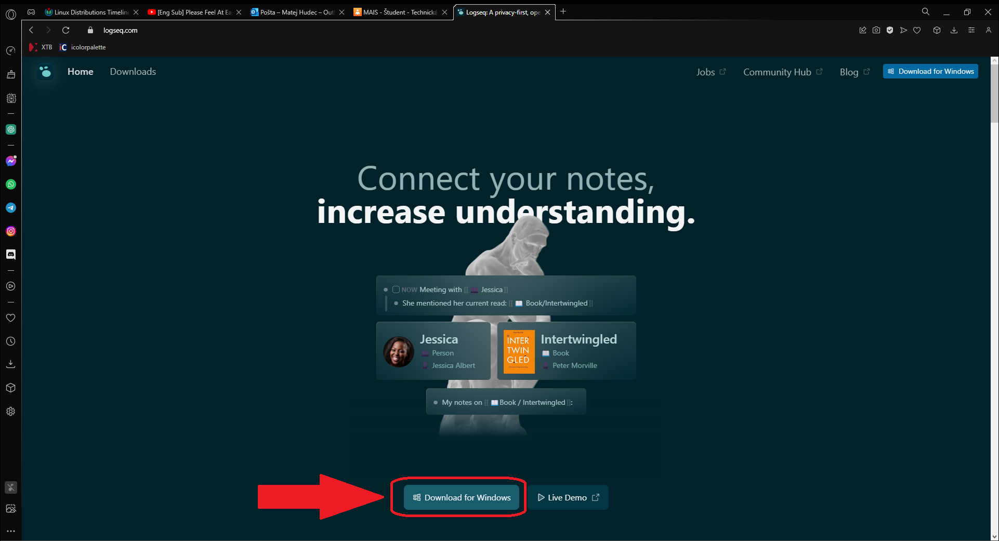
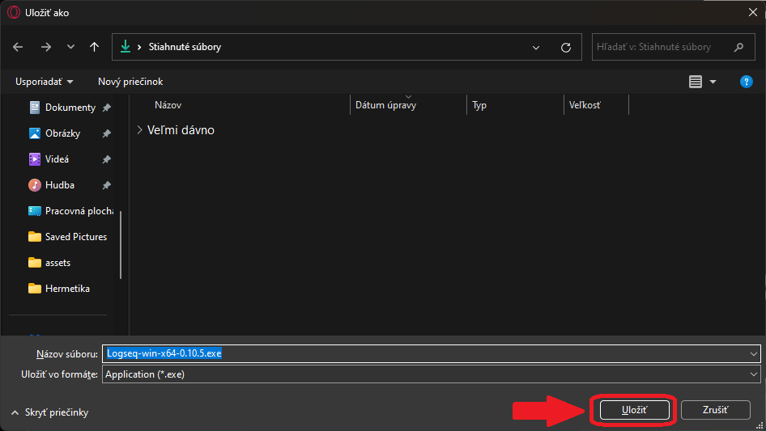
- Otvor a nainštaluj program LOGSEQ, automaticky sa ti otvorí demo poznámok vytvorených v tom programe
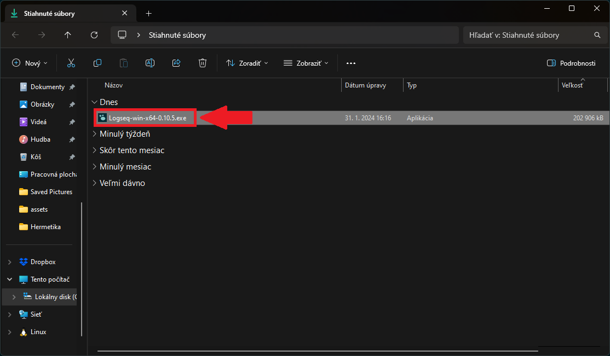
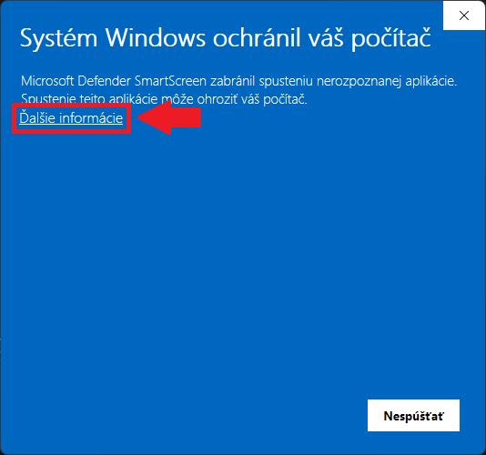
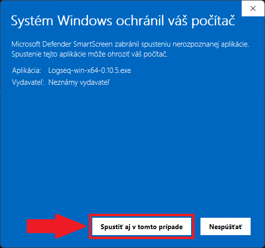
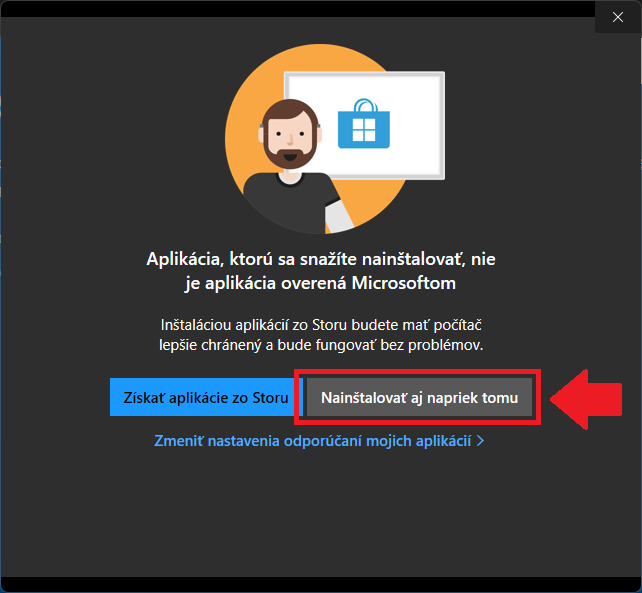
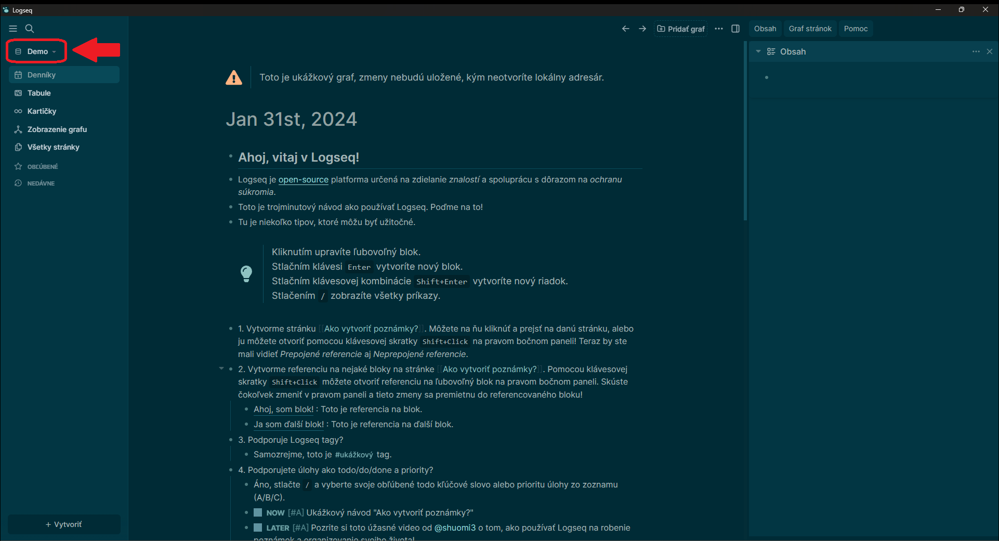
- Stiahni poznámky klik link na poznámky a vyextrahuj si priečinok poznámky
- pomocou WinRar, 7zip, WinZip alebo windowsa prieskumníka
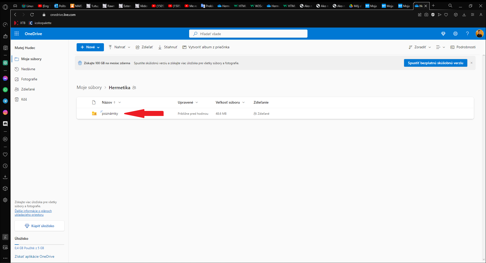
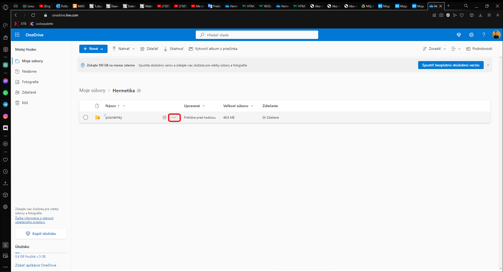
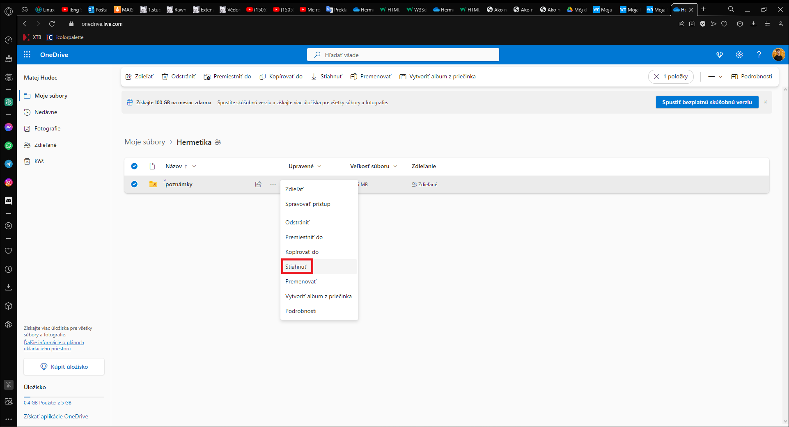
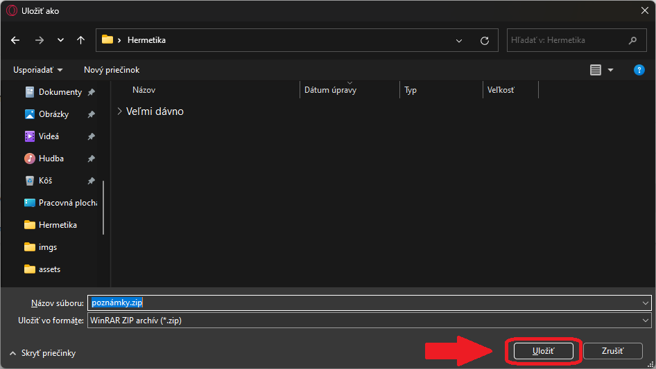
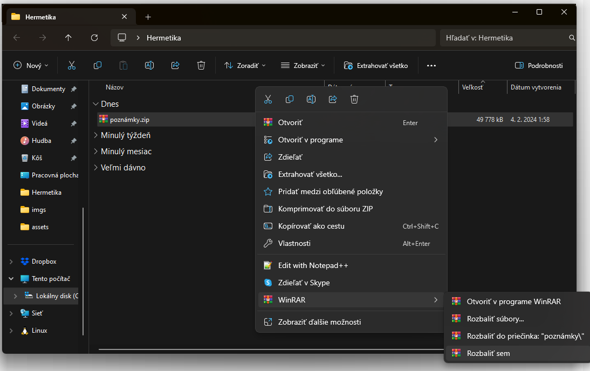
- Vlož poznámky do programu LOGSEQ
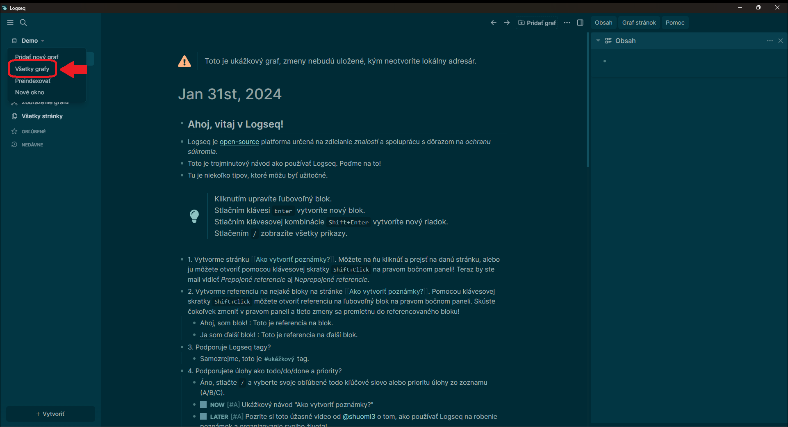
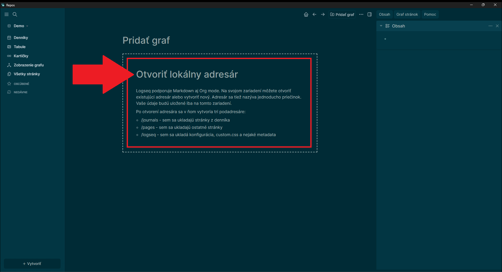
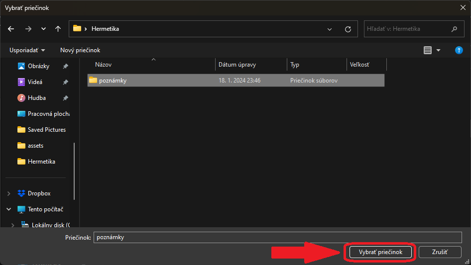
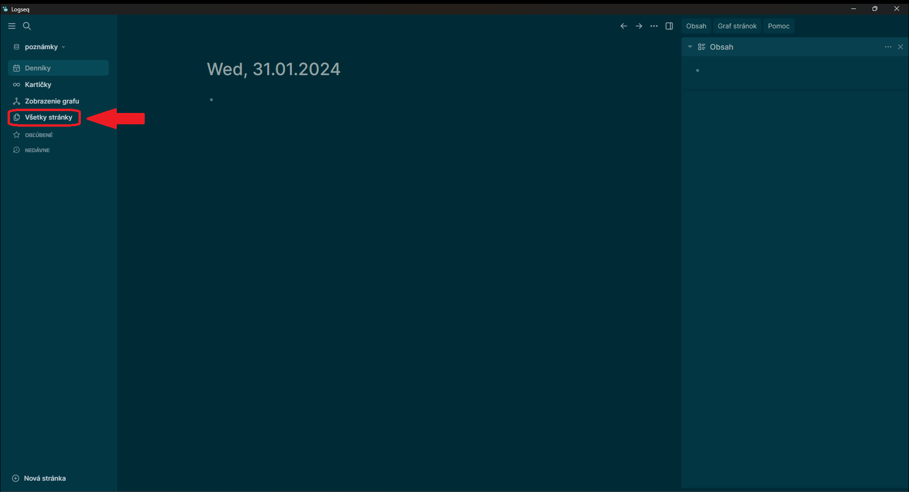
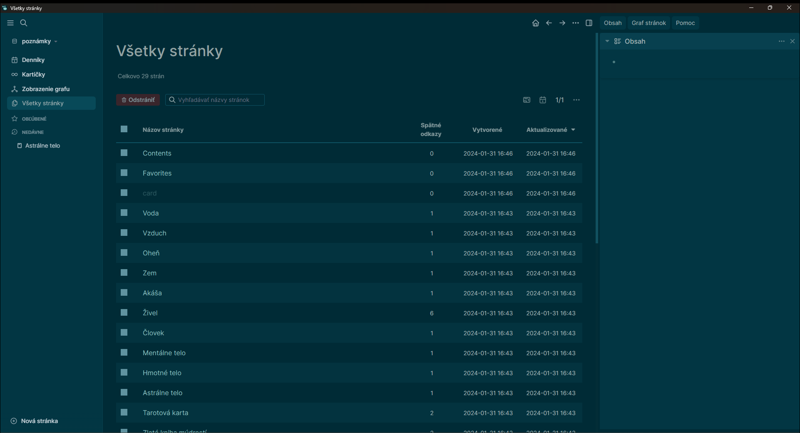